- 1 Einleitung
- 2 Erste Schritte mit R
- 3 Grundlagen
- 4 Wie lese ich Daten ein
- 5 Daten manipulieren
- 5.1 select() - Variablen auswählen (spaltenweise)
- 5.2 filter() - Filtern von Variablen (zeilenweise)
- 5.3 arrange() - Sortieren des Datensatzes
- 5.4 mutate() - Erstelle neue Variablen
- 5.5 summarize() - Zusammenfassung von Variablen
- 5.6 group_by - Gruppiere Variablen
- 5.7 across() - Anwenden von Funktionen auf Spalten
- 5.8 joins
- 5.9 pivot_longer() - Long data format
- 5.10 pivot_wider() - wider data format
- 6 Explorative-Datenanalyse
- 7 Datenvisualisierung
- 8 Karten erstellen in R üåç
- 9 Statistische Auswertungen
- 10 Datenmanagement
- 11 Reporting in Rmarkdown
- 12 Github
- 13 Bookdown
- 14 Blogdown
- 15 Shiny
- 16 Diverses
7.1 ggplot2 - grammar of graphics
ggplot2 basiert auf der grammar of graphics und ist ein statistisches Paket um Daten zu visualisieren. Es bietet extrem viele Möglichkeiten, Daten auf verschiedenste Weise darzustellen und auch zu transformieren, ohne etwas an den Rohdaten zu verändern. Der Workflow bei ggplot2 folgt dabei einer Logik und Reihenfolge die es einem erlaubt, in einem iterativen Ansatz identische Abbildungen für ähnliche Probleme zu gestalten.
Die Grammatik hinter ggplot zu verstehen ist dabei hilfreich um noch effektiver, schneller und anschaulicher Abbildungen zu erstellen. Das Prinzip sind Layer, also verschiedene Ebenen, die eine Abbildung aufbauen.

Figure 7.3: Source from: http://bloggotype.blogspot.com/
Alle Abbildungen bestehen aus data mit den Informationen, welche dargestellt werden und mapping, eine Beschreibung wie die Daten durch Aesthetics dargestellt werden. Es gibt fünf Komponenten für das mapping von Daten:
- Layer beinalten geometrische Elemente (geoms), bspw.
point,line,bar,boxplot, … und statistische Transformationen (stats). - Scales beschreiben Werte im Datenraum und setzen sie zu den Aesthetics in Bezug. Dazu gehören die Verwendung von Farbe, Form, Größe. Scales beeinflussen ebenfalls die Legende und Achsen.
- Coord beinhaltet das Koordinatensystem, bspw. ob Hilfslinien gezogen werden sollen oder ob neben dem klassischen Kartesischen Koordinatensystem Polar oder andere Kartenprojektionen verwendet werden.
- Facet beschreibt wie Gruppen anhand der Daten verteilt und differenziert dargestellt werden sollen.
- Theme modifiziert die Abbildungen um Textgröße, Position, Farbhintergrund und vieles vieles mehr.
7.1.1 Schlüsselkomponenten
Jeder ggplot2 Aufruf benötigt drei Komponenten.
- data
- aesthetics die beschreiben, wie die Daten im Koordinatenraum platziert werden.
- geoms zur Darstellung der Daten.
Der Datensatz sollte und liegt in den meisten Fällen tabular vor, also mit Zeilen (= observations) und Spalten (=variables), wobei jede Zelle einen eigenen Wert codiert (= value). Das Datenobjekt in R nennt sich data.frame oder neuerdings auch als eine etwas besser verknüpfte Variante im tidyverse tibble.
Hier ein simples Beispiel unter Verwendung des Speicherkoog Datensatzes:
# Verwende den Speicherkoogdatensatz auf Tagesbasis
ggplot(data = koog_day)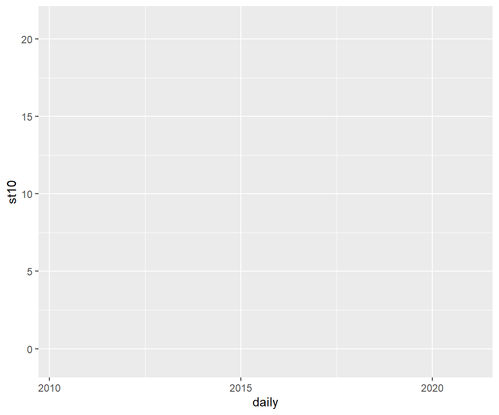
Komisch? Wieso ist die Abbildung denn leer? ü§Ø Ach ja, wir m√ºssen bei den Aestehtics noch festlegen, welche Variablen auf welche Achse geplottet werden sollen. Dazu setzen wir das Argument aes() was x = und was y = sein soll. Nehmen wir mal Das Datum auf Tagesbasis und die Bodentemperatur in 10 cm:
ggplot(data = koog_day, aes(x = daily, y = st10))
Häää? Immer noch leer.
ggplot fehlt der geom Layer um zu wissen, wie die Daten in das Koordinatensstem übertragen werden sollen:
ggplot(data = koog_day, aes(x = daily, y = st10)) +
geom_point()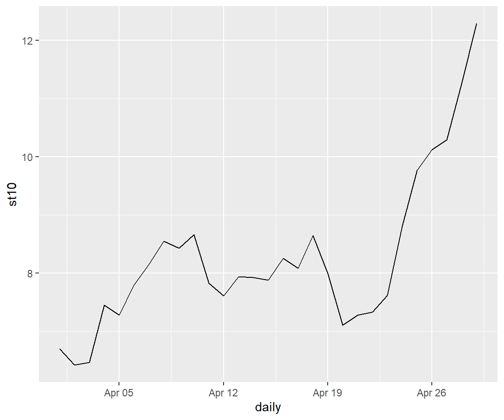
üéâ Herzlichen Gl√ºckwunsch zu deiner ersten ggplot Abbildung! Wir k√∂nnen diesen Abschnitt auch als eigenes Objekt speichern ggplot(data = koog_day, aes(x = daily, y = st10)) und fortlaufend editieren.
p <- ggplot(data = koog_day, aes(x = daily, y = st10))
# Erstelle ein Liniendiagram
p + geom_line()
# Boxplotdiagram
p + geom_boxplot()
… und viele weitere. Man kann dabei auch mehrere geoms in einem Plot erstellen:
p + geom_line() + geom_boxplot(aes(group = year))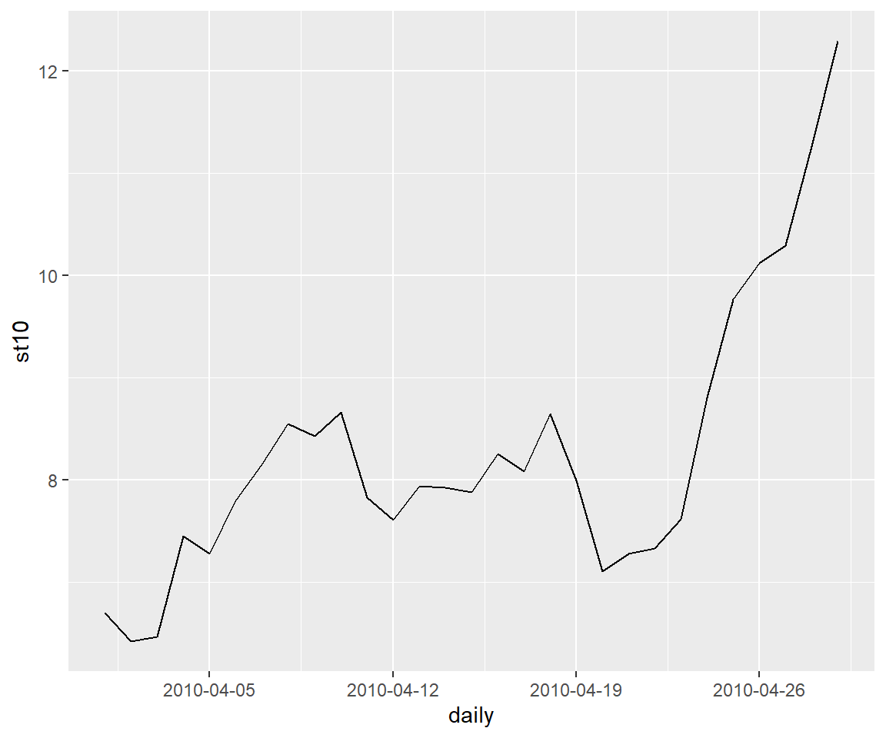
O, viel kann man jetzt nicht erkennen. Der Layer mit dem Boxplot liegt über unserem Liniendiagramm. Was passiert wenn wir die Abfolge der Layer ändern?
p + geom_boxplot(aes(group = year)) + geom_line()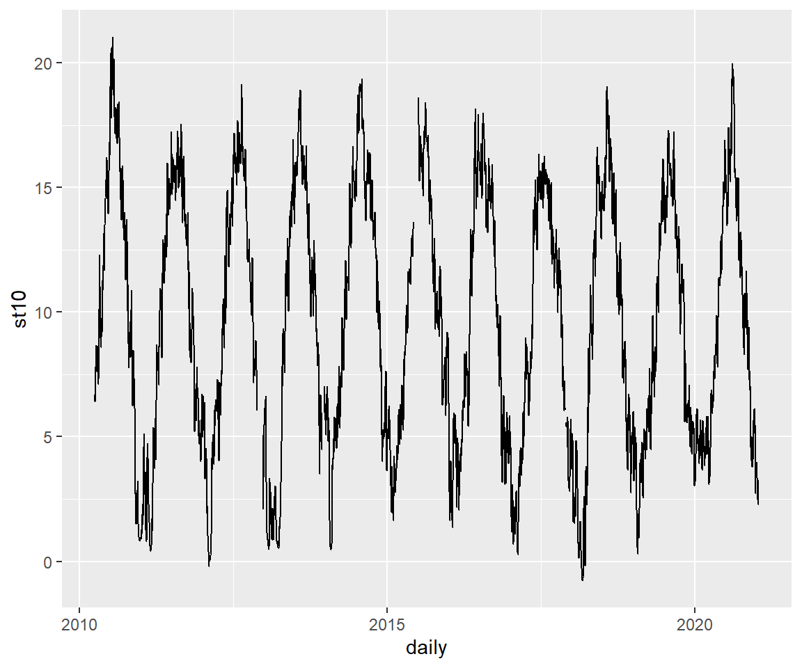
Wir können das farblich noch etwas besser darstellen:
ggplot(data = koog_day, aes(x = daily, y = st10, group = year)) +
geom_boxplot(fill = "grey") +
geom_line() +
geom_point(data = koog_year, mapping = aes(as.Date(paste(year, 06, 15, sep = "-")), st10), shape = 21, fill = "white", size = 6) +
theme_bw()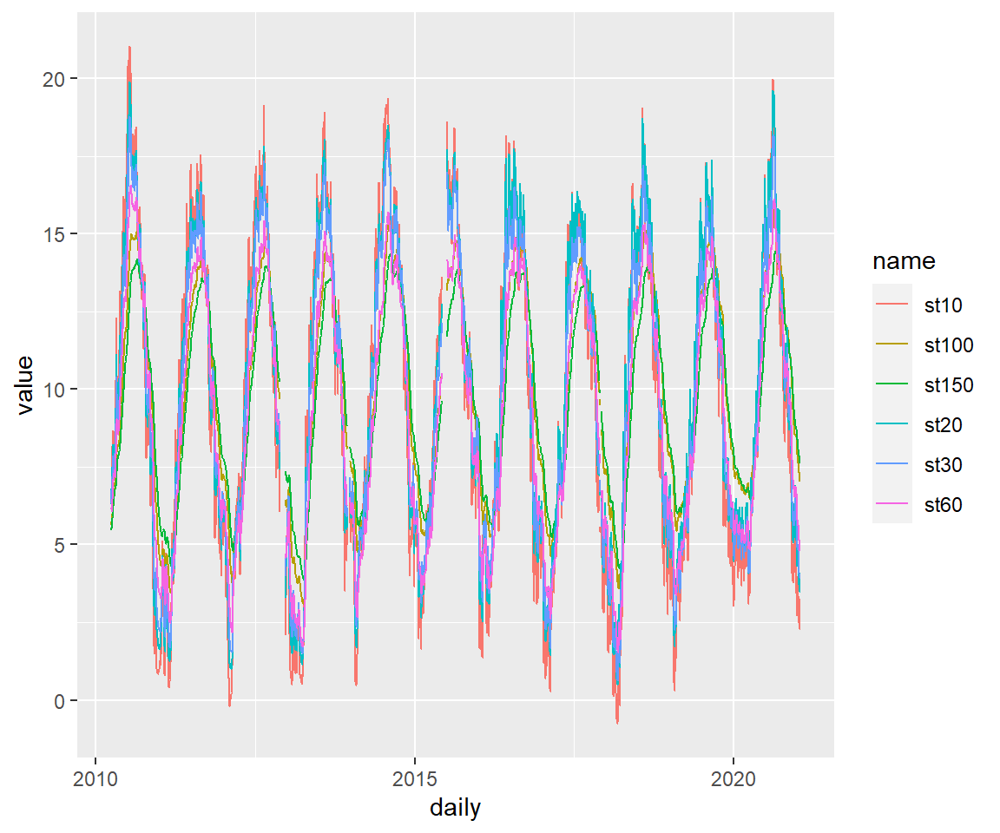
üö® Alles was von den Daten visualisiert werden soll MUSS in den aes() Aufruf geschrieben werden.
üö® Die Reihenfolge der Layer ist entscheident, wie der Plot sp√§ter aussieht.
Das Jahr 2013 war also relativ kalt und das Jahr 2014 das wärmste in der Zeitreihe.
Wollen wir bspw. die Bodentemperatur >= 10 °C in einer anderen Farbe darstellen, dann muss dies in den aes() Aufruf hinterlegt werden, da wir diese Informationen von den Daten extrahieren:
# Das funktioniert nicht
ggplot(data = koog_day, aes(x = daily, y = st10), color = st10 > 10) +
geom_point()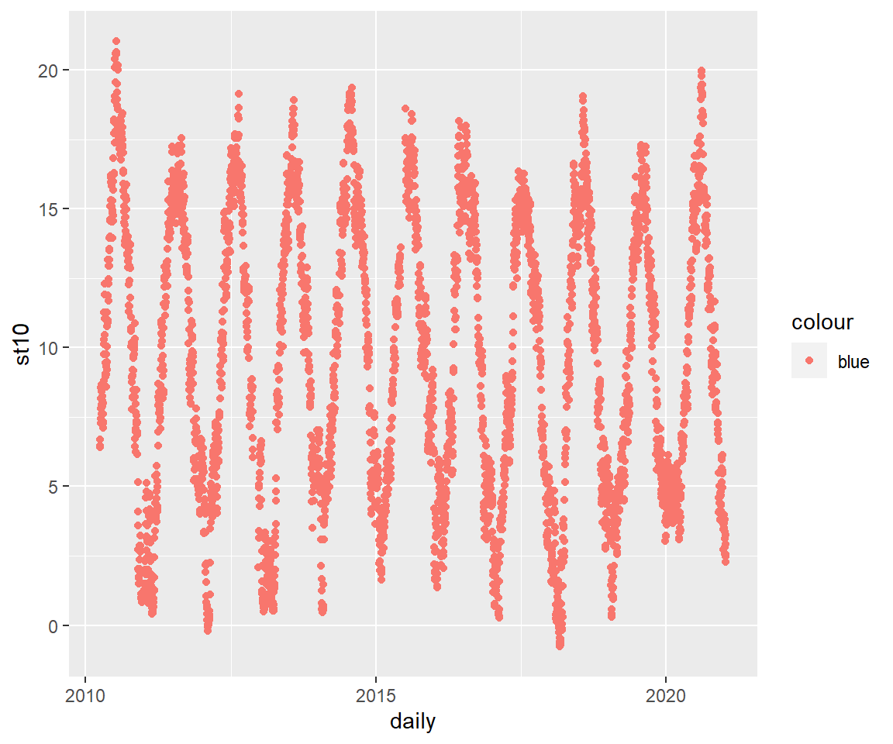
# Das funktioniert
ggplot(data = koog_day, aes(x = daily, y = st10, color = st10 > 10)) +
geom_point()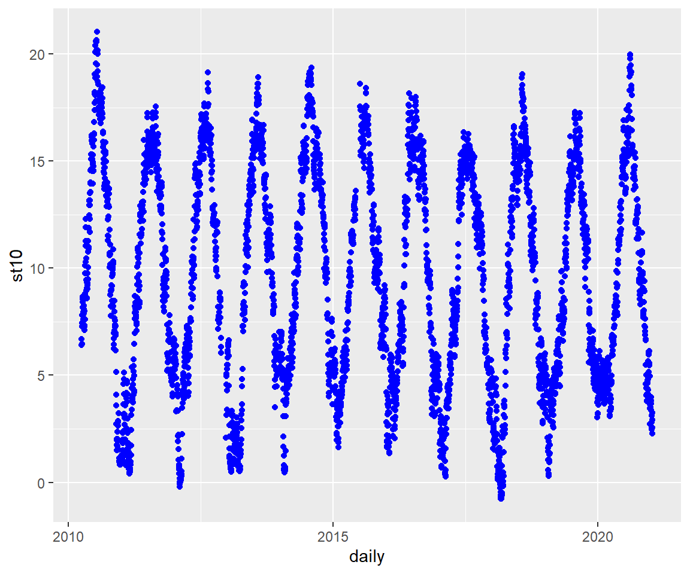
Ähnlich verhält es sich bei der farblichen Darstellung einer Variable. Möchte ich der Bodentemperatur den fixen Wert einer Farbe blau zuordnen, dann MUSS dies außerhalb des aes() Aufrufes erfolgen:
# Das funktinoert nicht
ggplot(data = koog_day, aes(x = daily, y = st10)) +
geom_point(aes(color = "blue"))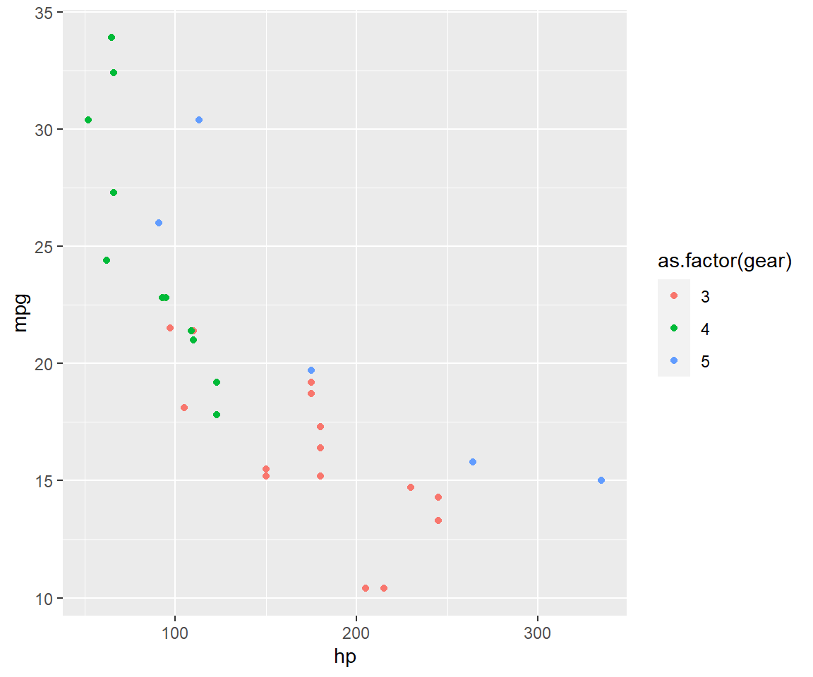
# Das funktioniert
ggplot(data = koog_day, aes(x = daily, y = st10)) +
geom_point(colour = "blue")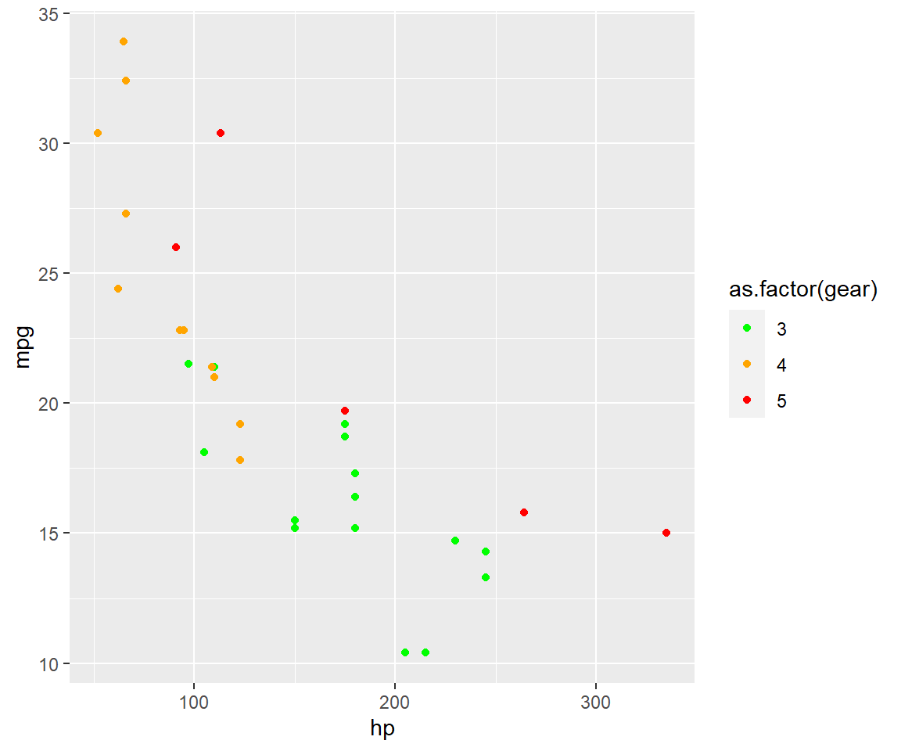
7.1.2 Aesthetics (color, size, shape)
Um zusätzliche Informationen einem plot hinzuzufügen, kann man im aes() Argument folgende Befehle setzen:
# Farbe
ggplot(koog_day, aes(daily, st10, color = st10)) +
geom_point()
# Größe
koog_day %>%
filter(daily < "2010-06-30") %>%
ggplot(aes(daily, st10, size = st10)) +
geom_point()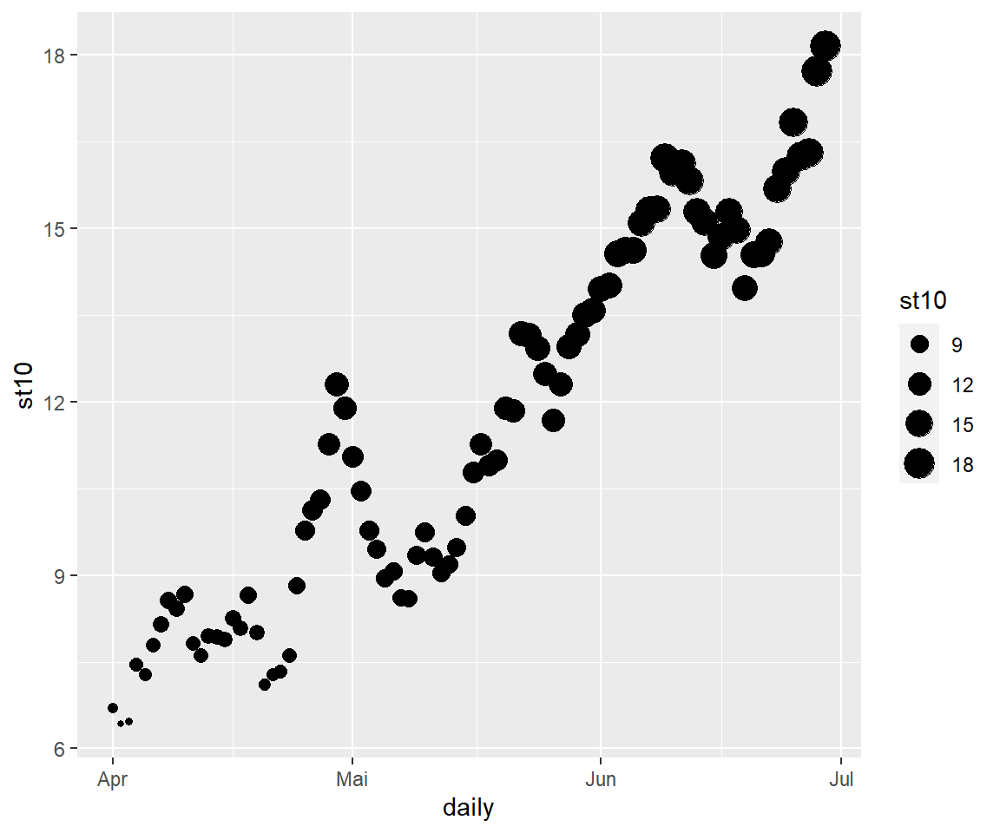
Die Form (shape) kann man auch beeinflussen, allerdings nicht mit einer kontinuierlichen Variable wie Bodentemperatur. Daher schauen wir uns den mtcars Datensatz an:
# Stelle Allrad, Front- und Heckantriebler in unterschiedlichen Formen dar
ggplot(mpg, aes(displ, hwy, shape = drv)) +
geom_point()
7.1.3 Smoothers and models
Manchmal ist ein Trend aus den Daten nicht unbedingt gut zu erkennen. Nehmen wir das Beispiel Grundwasserstand und EH in 60 cm Tiefe:
koog_day %>%
ggplot(aes(wt, eh100a)) +
geom_point()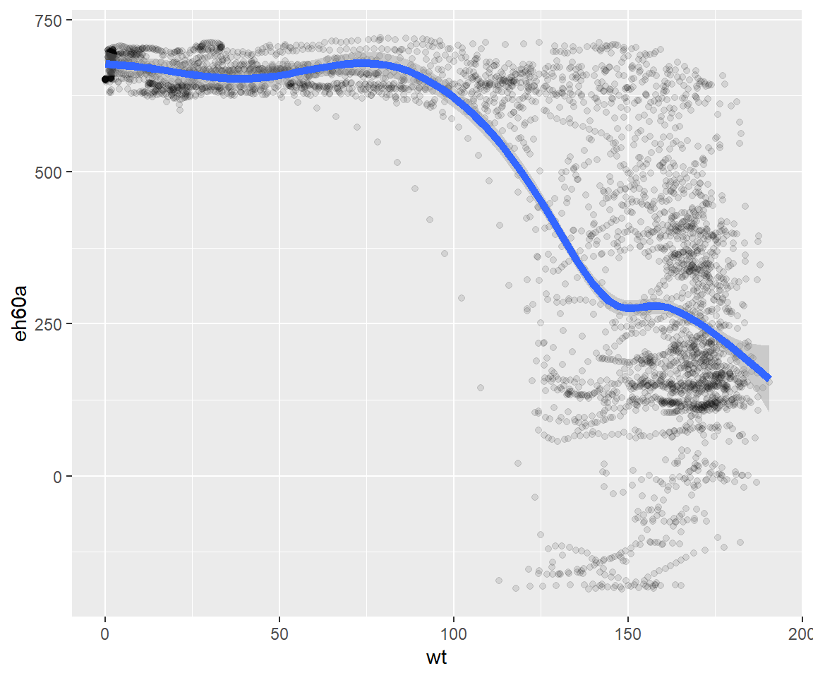
Die Funktion geom_smooth() plottet als default eine Loess Kurve, welches eine lokale Regression der Daten ist:
koog_day %>%
ggplot(aes(wt, eh60a)) +
geom_point(alpha = 0.1) + # Durch den Alpha Wert können wir den Punkten Transparenz geben
geom_smooth(size = 2)
So lässt sich besser erkennen und filtern, dass bei 75 cm im Mittel das EH beginnt abzusinken. Wollen wir anstelle der Loess Kurve eine lineare Regression verwenden müssen wir das als Argument definieren:
koog_day %>%
ggplot(aes(wt, eh60a)) +
geom_point(alpha = 0.1) + # Durch den Alpha Wert können wir den Punkten Transparenz geben
geom_smooth(size = 2, method = "lm") # lm = linear model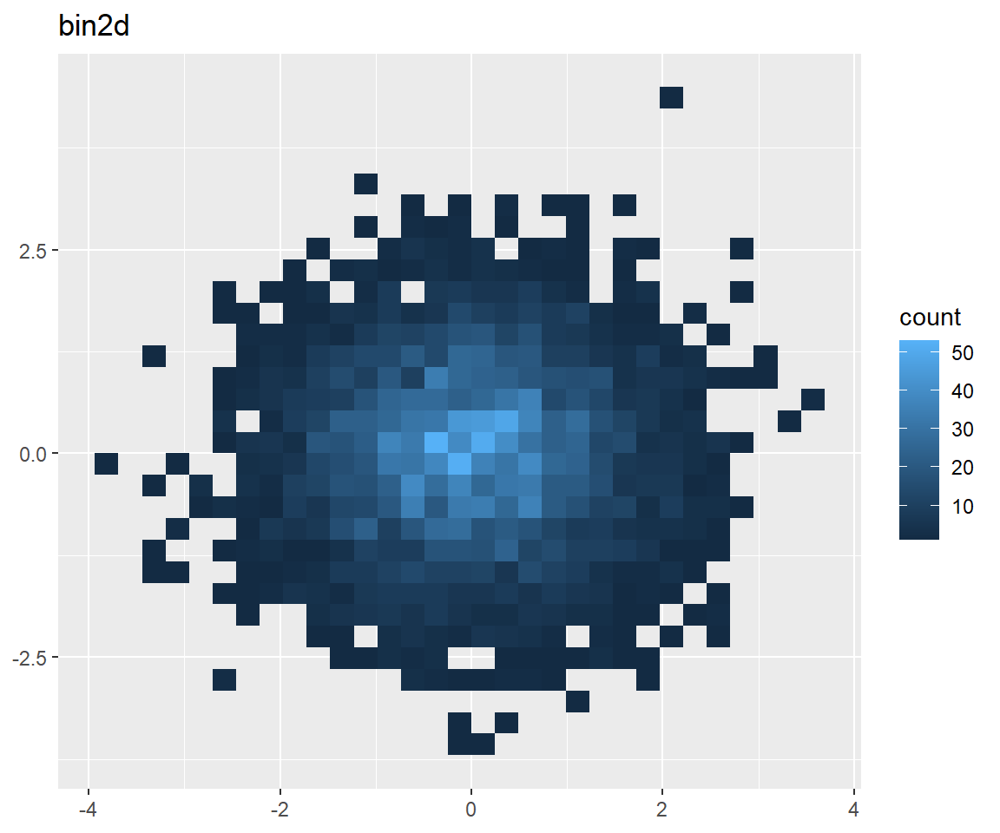
EH und Grundwasserstand sind also negativ korreliert.
7.1.4 Labels

Figure 7.4: Source from: https://xkcd.com/833/
Bisher haben wir gesehen, dass ggplot als default die Achsenbezeichnung (Spaltenname) in den aesthetics benutzt, um die Achsen zu beschriften.
koog_day %>%
ggplot(aes(wt, eh60a)) +
geom_point(alpha = 0.1) + # Durch den Alpha Wert können wir den Punkten Transparenz geben
geom_smooth(size = 2, method = "lm") # lm = linear model
wt kann jedoch alles bedeuten und welche Einheit dahintersteckt erschließt sich auch nicht. Eine gute Achsenbeschriftung ist extrem wichtig und kann wie folgt umgesetzt werden:
p <- koog_day %>%
ggplot(aes(wt, eh60a)) +
geom_point(alpha = 0.1) + # Durch den Alpha Wert können wir den Punkten Transparenz geben
geom_smooth(size = 2, method = "lm") +# lm = linear model
labs(
title = "Eine klasse Abbildung",
x = "Grundwasserflurabstand (cm u. GOK)",
y = expression(paste(E[H], " (mV)"))
)Mit der Funktion expression() können wir Sonderzeichen setzen aber auch Zahlen hoch oder tiefstellen. Durch das Setzen der Zahl in eine eckige Klammer [] tiefstellen und durch ^ hochstellen. Wollen wir diese Sonderzeichen mit normalem Text verknüpfen, dann behelfen wir uns mit der Funktion paste(). Die Einzelnen Bauteile des Satzes werden durch , getrennt.
7.1.5 Themes
ggplot2 hat bereits eine Vielzahl integrierter themes. Ein theme beeinflusst das Erscheinungsbild der Abbildung.
# schwarz/weiß
p + theme_bw()
# klassisch
p + theme_classic()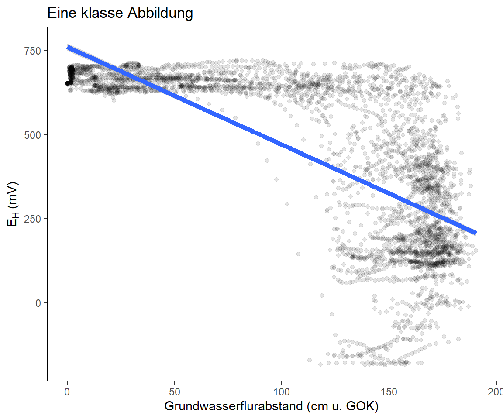
# Komplett ohne Achsen etc.
p + theme_void()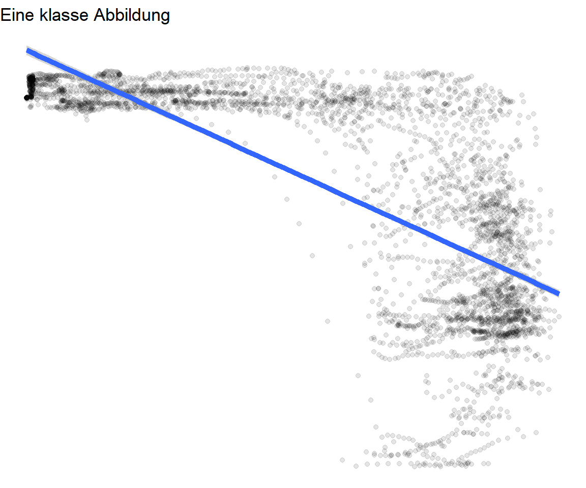
Und noch eine weitere Vielzahl. Wir sind auf diese themese aber nicht begrenzt, sondern können alles editieren. Wollen wir die Farbe des Textes in rot ändern, müssen wir folgendes tun:
p + theme(text = element_text(color = "red"))
Auf diese Art können wir alle Bestandteile einer Abbildung verändern:
# Plotfarbe
p + theme(panel.background = element_rect(fill = "lightblue",
colour = "lightblue",
size = 0.5, linetype = "solid"))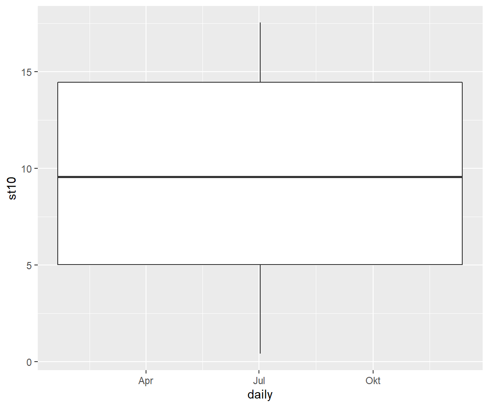
# Hintergrundfarbe
p + theme(plot.background = element_rect(fill = "lightblue",
colour = "lightblue",
size = 0.5, linetype = "solid"))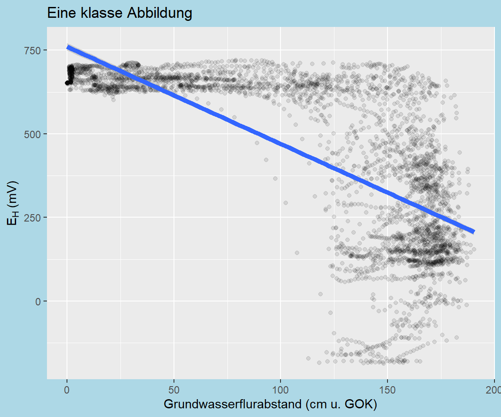
Zu Beginn einer R Session oder eines Skriptes kann man sich auch ein modifiziertes theme speichern und auf diese einfach zurückgreifen:
# Setze das theme
kristofs_theme_des_jahres <- theme(
panel.background = element_rect(fill = "yellow", color = "red"),
panel.grid.major = element_blank(),
panel.grid.minor = element_blank(),
panel.border = element_blank())
# Wende es auf unseren Plot an
p + kristofs_theme_des_jahres
7.1.6 Facets
Facets sind multi-panel-plots und lassen sich am besten auf diskrete Variablen übertragen.
üí° Facets sind gro√üartig um plots √ºberschaulicher zu gestalten.
# Plotte Farbe zu den Daten
mtcars %>%
ggplot(aes(hp, mpg, color = cyl)) +
geom_point()
# Erstelle facets nach der Variable cyl (Zylinder)
mtcars %>%
ggplot(aes(hp, mpg, color = cyl)) +
geom_point() +
facet_wrap(~cyl)
So ist es direkt ersichtlich, je mehr Zylinder desto mehr PS und desto höher ist der Verbrauch. Mit einem 8-Zylinder muss man beim Tanken schon etwas tiefer in die Tasche greifen. Die Variable nach der das facetting stattfindet wird mit der Tile ~ verknüpft. facet_grid ist am besten für viele Variablen in Form einer Matrix (m x n) und facet_wrap für eine Variable wobei die Anzahl der Spalten (ncol) und Zeilen (nrow) definiert werden kann. Auch ob die Skala an die Zahlen des facets angepasst werden sollen.
# Erstelle facets nach der Variable cyl (Zylinder)
mtcars %>%
ggplot(aes(hp, mpg, color = cyl)) +
geom_point() +
facet_wrap(~cyl, nrow = 3, scales = "free_y") # Arrangiere die Plots untereinander und Autoskalierung
üí° Um die Variablennamen nach denen das facetting stattfindet nicht in den Rohdaten durchzuf√ºhren, gibt es das Argument labbeler =. Das ist praktisch um die Plot zu annotieren:
# Erstelle einen Vektor (col_name) mit den Namen, die geändert werden sollen
col_name <- c("4" = "gut", "6" = "besser", "8" = "am besten")
# Erstelle facets nach der Variable cyl (Zylinder)
mtcars %>%
ggplot(aes(hp, mpg, color = cyl)) +
geom_point() +
facet_wrap(~cyl, nrow = 3, scales = "free_y", labeller = as_labeller(col_name)) 
# Füge den col_name vector dem labeller Argument hinzu7.1.7 Coordinate system
Fast ausschließlich arbeitet man mit dem klassichen kartesischen Koordinatensystem. Ein Trick die Achsen zu vertauschen geht mit coord_flip():
# Normal
mtcars %>%
ggplot(aes(mpg, hp)) +
geom_point()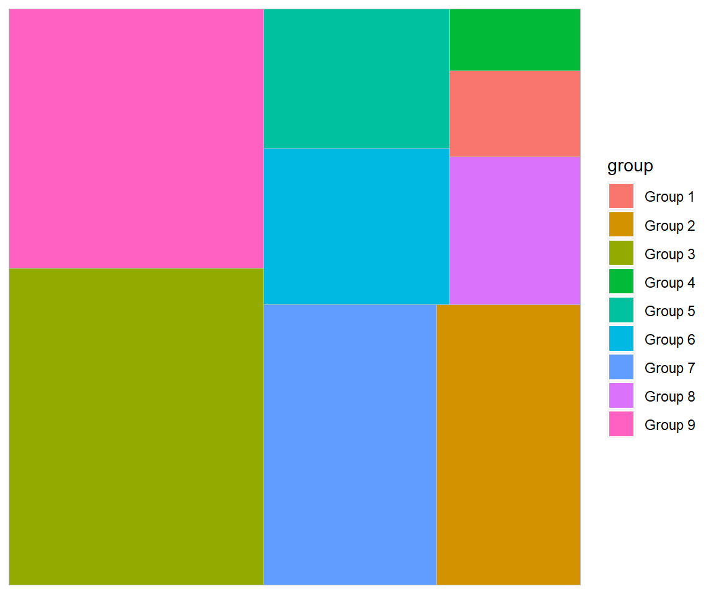
# Achsen tauschen
mtcars %>%
ggplot(aes(mpg, hp)) +
geom_point() +
coord_flip()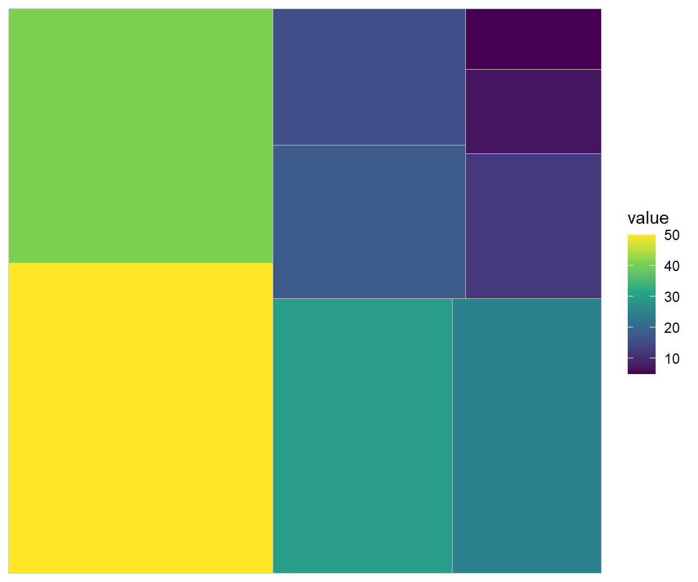
Man kann auch in einen Teil des plots “zoomen”, wobei mit coord_cartesian() keine Neuberechnung stattfindet gegenüber scale limits oder xlim:
p <- ggplot(mpg, aes(displ, cty)) + geom_point() + geom_smooth()
p + geom_vline(xintercept = 4, linetype = 2) + geom_vline(xintercept = 6, linetype = 2)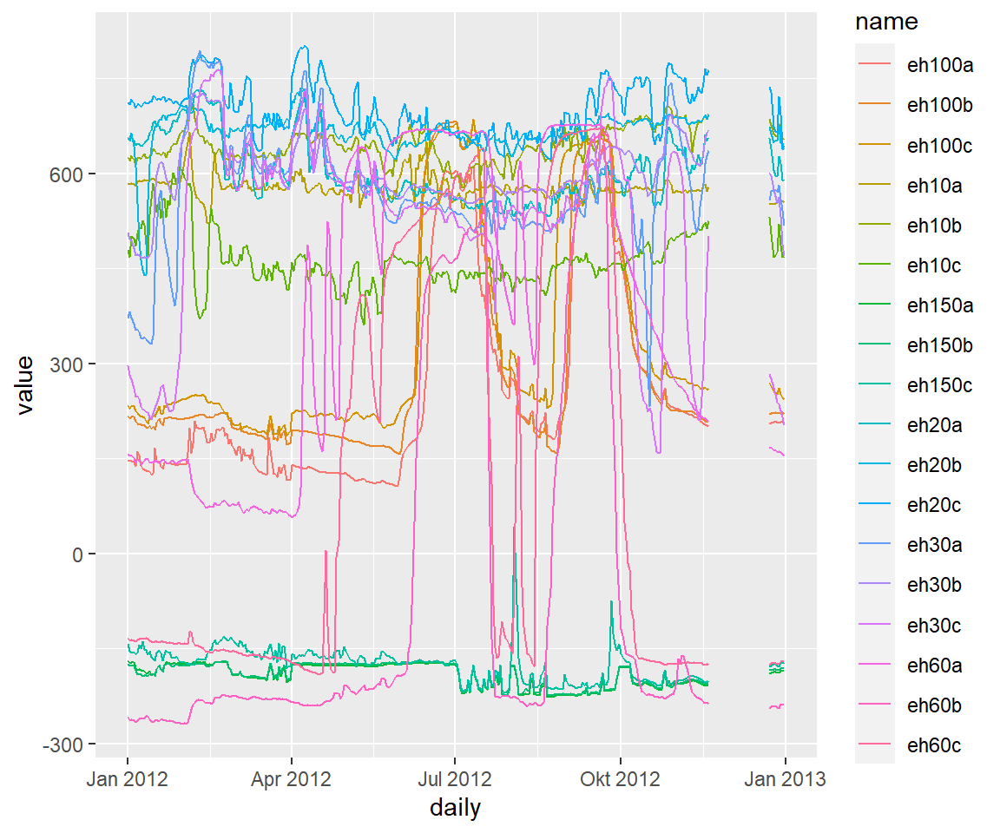
p + xlim(c(4, 6)) + ggtitle("xlim")
p + scale_x_continuous(limits = c(4, 6)) + ggtitle("scale limits")
p + coord_cartesian(xlim = c(4, 6)) + ggtitle("coord_cartesian")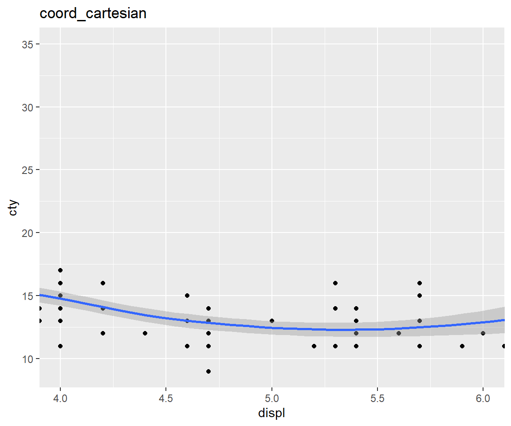
7.1.8 Annotations
Die Funktion annotate() ist hilfreich, um Dinge hervorzuheben und dem Leser einen schnelleren Zugang zu der Hauptaussage einer Abbildung zu geben:
ggplot(mpg, aes(displ, hwy)) +
geom_point(data = subset(mpg, manufacturer == "subaru"),
colour = "orange",
size = 3) +
geom_point() +
annotate(geom = "curve",
x = 4, y = 35, xend = 2.65, yend = 27,
curvature = 0.3, arrow = arrow(length = unit(2, "mm"))) +
annotate(geom = "text", x = 4.1, y = 35, label = "subaru", hjust = "left")
Farben über facets zu colorieren mit den Daten in grau als Hintergrund ist ebenfalls möglich:
ggplot(mpg, aes(displ, hwy)) +
geom_point(data = mpg[c("displ", "hwy")], color = "grey") +
geom_point(aes(colour = factor(cyl))) +
facet_wrap(~cyl)